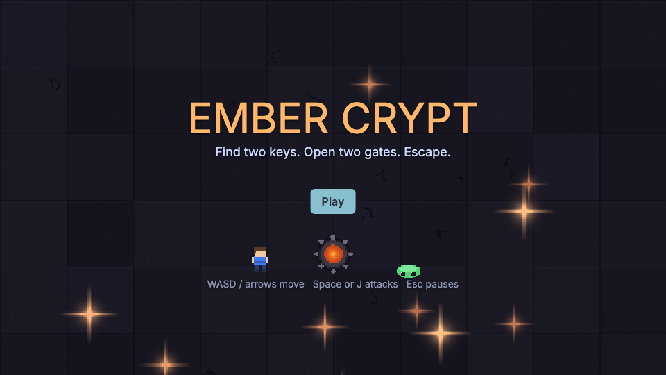
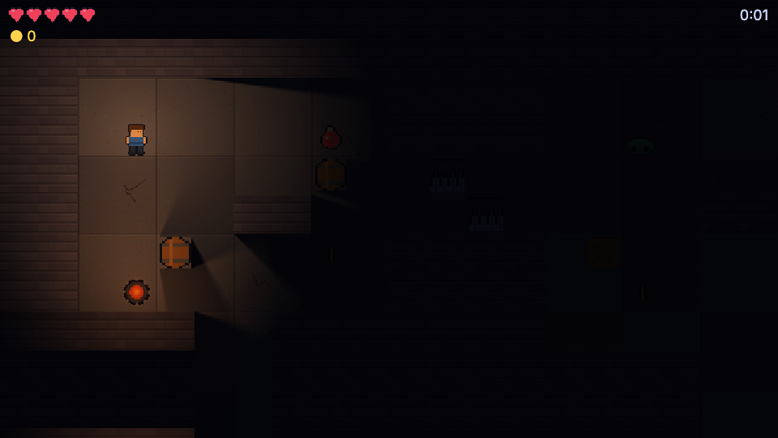
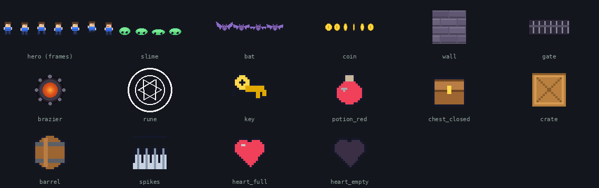
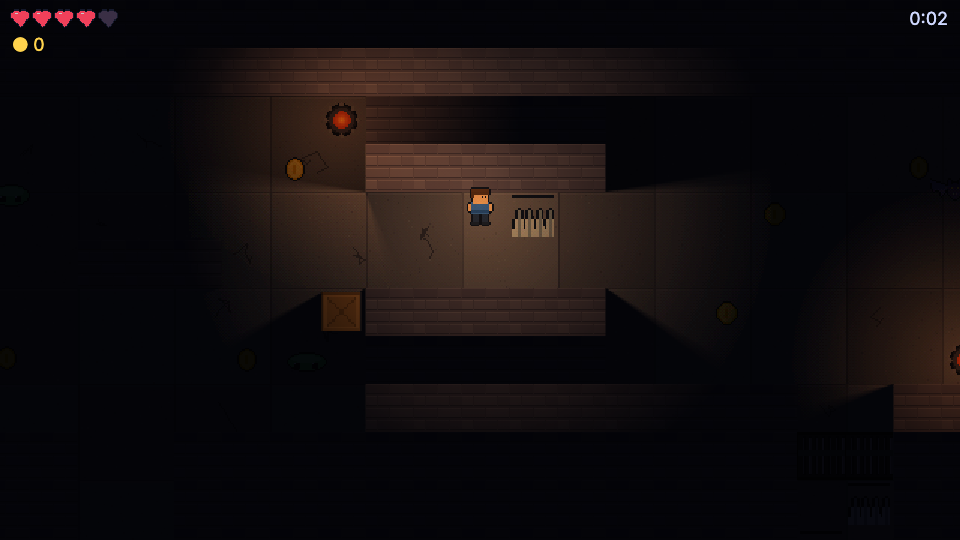
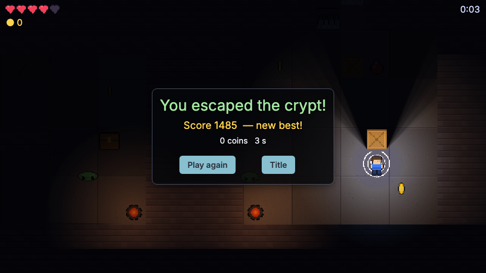
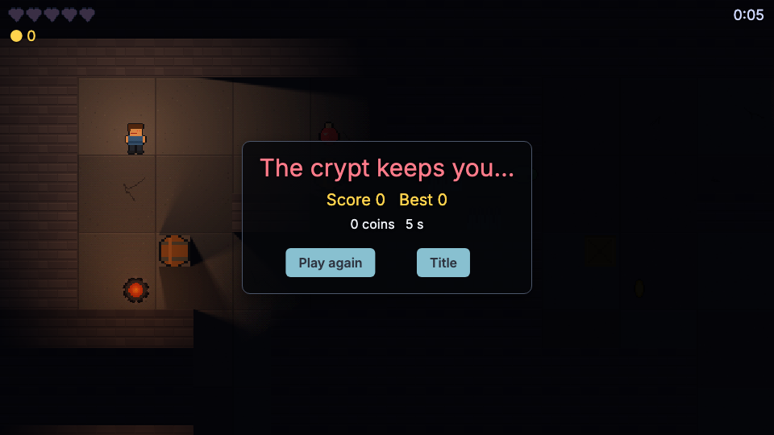

55 · Ember Crypt: a complete game, from art to export
This is the capstone of the dungeon series. Pages 49 to 54 built a plain dungeon out of coloured squares. Here we build a finished game that looks good: pixel-art tiles, an animated hero with a sword, slimes and bats that really see you (and lose you behind walls), keys and gates, braziers and a lantern that cast real shadows, floating damage numbers, hit-stop, screen shake, particles, sound and music, a title screen, a pause menu, game over and victory screens and a high score that survives a restart.
It is written Unity-style from the first line to the last: MonoBehaviour, prefabs, Instantiate, GameManager, Singleton, UnityEvent, coroutines, triggers, PlayerPrefs, SceneManager. It is also a map of the engine: almost every idea from the Examples pages appears once, in one project.
| Idea | Page it comes from |
|---|---|
| Scripts, input, movement | Your first script, Input and movement |
| Prefabs, spawning, overrides | Spawning, prefabs and Destroy |
| Collisions and triggers | Collisions, triggers and raycasts |
| Enemy AI | Enemy AI and state machines |
| Health and damage | Health, damage and death |
| Keys and pickups | Inventory, items and quests |
| Floating text, particles, hit-stop, shake | Juice |
| 2D lights and shadows | 2D lights and shadows |
| Animation | Animation |
| HUD, panels, buttons | UI: HUD, buttons and menus |
| Sound and music | Audio |
| Saving a best score | Saving and loading |
| Scenes: title and game | Scenes and persistent objects |
| The GameManager | GameManager and Singletons |
| Shipping | Build, publish and ship |
Prerequisites: the dungeon series, or at least pages 49 to 52. Allow three to four hours; every file is printed in full and explained.


Download: the finished game, also in examples/ember-crypt of the engine. Unzip, open nord.project.json in Nord and press Play.
Controls: WASD or arrows move, Space or J swings the sword, Esc pauses.
Start from the starter project#
Unity projects usually come with a starter project: every asset imported, prefabs built, scenes laid out, no game code. Here it is:
Download the starter project. Unzip it, open nord.project.json, press Play: you see the title scene's pictures with no title text and no working buttons. Inside:

assets/: all the sprites above, the floor texture, particle textures, 14 sound effects, 4 music tracks and the.meta.jsonfiles with the hero's clips (idle,walk,jump,hurt) and the slime, bat and coin animations.prefabs/: all 18 prefabs of section 4, set up with sprites, colliders, rigidbodies and the library light scripts, but without your scripts.scenes/title.scene.json(complete) andscenes/main.scene.json(Camera,GameManager,Run,Level,Light2Dwith its settings,Hud,Herowith itsLantern): entities and components in place, no scripts attached.scripts/: onlymap.js(the dungeon as text, which is data, not code) and the three light library scripts. Everything else you write while reading this page.
Each section below says which object gets which script. In short: Follow.js, Run.js, Level.js, Hud.js, GameManager.js go on the scene objects of the same name (Follow on Camera); Hero.js and Health.js on Hero; Pickup.js on the four pickup prefabs (with kind = coin, key, potion, chest); Door.js, Spikes.js, Exit.js on the prefabs of those names; Enemy.js on slime (speed 55, hp 2, sight 150) and bat (speed 95, hp 1, sight 190, zigzag 1); FloatText.js on floattext; Slash.js on slash; Title.js on the Title object of the title scene; World.js and Fx.js are helper modules.
1 The plan#
You are trapped in a crypt of six rooms. The way out is the glowing rune in the far room. Two iron gates stand in the way; each needs a key. Slimes and bats wander and hunt you. You carry a lantern, there are braziers on the walls, and you cannot see further than the light.
Good games are small parts that do not know each other. Here they are:
| Script | On | Job |
|---|---|---|
map.js, World.js |
nothing | the dungeon as text; questions about it (what is at x, y? can A see B?) |
Fx.js |
nothing | static helpers: floating text, bursts, hit-stop |
Level.js |
Level |
reads the map, instantiates prefabs |
GameManager.js |
GameManager |
the engine's manager: lives are the hero's hearts |
Run.js |
Run |
a Singleton: coins, keys, clock, how a run ends |
Hero.js, Health.js |
Hero |
steering, animation, sword; grace time and shake |
Enemy.js |
slime and bat prefabs | wander, see, chase, take damage, die |
Pickup.js, Door.js, Spikes.js, Exit.js |
the matching prefabs | one behaviour each |
FloatText.js, Slash.js |
effect prefabs | move and fade themselves, then Destroy |
Follow.js |
Camera |
smooth camera |
light2d*.js |
Light2D, lights, walls |
darkness and shadows (library scripts) |
Hud.js, Title.js |
Hud, Title |
screens |
They talk the way Unity scripts do: singletons (Run.instance, GameManager.instance), method calls through GetComponent, a UnityEvent (Run.instance.onChanged) and the global EventBus (level, lives, gameover).
2 The project#
Open the Project tab. In Project properties set:
- Start scene:
scenes/title.scene.json. - Game size:
640×360, Scalingfit. - Pixel art: on (it turns off smoothing).
- Background:
#07080c. - Physics:
arcade, gravity Y0. - Press Apply project properties.
Then unfold Input Manager (actions and keys) just below: add the action attack (type the name, press Add action, then ＋ key and press Space; again for J; ＋ mouse/pad for Mouse0) and give the existing interact action the keys E and Enter.
In the file nord.project.json (open it in a text editor to check what the editor wrote), these keys differ from a default project:
"startScene": "scenes/title.scene.json",
"display": { "width": 640, "height": 360, "scale": "fit", "pixelArt": true, "background": "#07080c" },
"physics": { "engine": "arcade", "gravity": [0, 0, 0] },
"input": { "actions": { "attack": ["Space", "KeyJ", "Mouse0"], "interact": ["KeyE", "Enter"] } }pixelArt: true turns off smoothing so 16 and 32 pixel art stays razor sharp (Unity: Filter Mode: Point). The game starts at the title scene, which loads the game scene when you press Play.
The art is the pixel art bundled with Nord: hero.png (a sheet of 32 × 32 frames with the clips idle, walk, jump, hurt), the slime and bat sheets, wall and floor textures, an iron gate, a brazier, a rune, items (key, potion, chest, crate, barrel, spikes, hearts), sound effects and music. Copy assets/ from the download. Each sheet has a .png.meta.json next to it with its frame size and clip names, written by the Sprite editor (Animation): "walk": { "frames": [2, 3, 4, 5], "fps": 10, "loop": true }.
3 The dungeon as text#
scripts/map.js: # wall, . floor, P the hero's start, o coin, k key, D a gate tile (a gate is two tiles wide), + potion, B brazier, c crate or barrel, ^ spikes, C chest, s slime, b bat, X the exit rune.
File: scripts/map.js (new file, the whole file)
/** The dungeon. # wall, . floor, P hero start, o coin, k key, D door (2 tiles), + potion, B brazier, c crate or barrel,
* ^ spikes, C chest, s slime, b bat, X exit. 40 x 22 tiles of 32 px. */
export const MAP = [
'########################################',
'########################################',
'##........####.........B#####.........##',
'##.P....+.####.s......o.#####......ok.##',
'##......c..^..............D^....o.....##',
'##....##....^.....###.....D...........##',
'##..c...o.####.c.......c#####..o...b..##',
'##.B......####..o....os.#####.......B.##',
'#####..#######..........#########..#####',
'#####..###########..#############DD#####',
'#####..###########..#############.^#####',
'#####..###########..#############^.#####',
'##.B........######..##########........##',
'##....b...o.####..........####.o..c+..##',
'##.o........####.+..b...o.####........##',
'##..c.##......^...........####........##',
'##..................##..C.####.....c..##',
'##.......s..####..........####.s...X..##',
'##..o.....k.####.oc.....s.####......o.##',
'##..........####.........B####B.......##',
'########################################',
'########################################',
];scripts/World.js asks the map questions (a static helper class, like a Unity utility):
File: scripts/World.js (new file, the whole file)
import { MAP } from './map.js';
/** Questions about the dungeon map. A static helper class: no entity, no state. */
export default class World {
static TILE = 32;
/** The map character at a world point. Outside the map everything is wall. */
static TileAt(x, y) { return MAP[Math.floor(y / World.TILE)]?.[Math.floor(x / World.TILE)] ?? '#'; }
/** True when no wall lies on the straight line between two points (line of sight). Samples every 8 px, finer than a tile. */
static LineClear(ax, ay, bx, by) {
const steps = Math.ceil(Math.hypot(bx - ax, by - ay) / 8);
for (let i = 1; i < steps; i++) {
const t = i / steps;
if (World.TileAt(ax + (bx - ax) * t, ay + (by - ay) * t) === '#') return false;
}
return true;
}
}TileAtconverts a world position to a tile by dividing by 32. Outside the map everything is#, so nothing can see or walk beyond the edge.LineClearis line of sight: it walks the straight line between two points in 8 pixel steps (finer than a tile, so no corner slips through) and answers false at the first wall. It is a map lookup, not a physics raycast, so it is cheap enough for every enemy every step.
4 Prefabs#
Everything that appears in the level is a prefab: a saved entity with its components and scripts. Make these in the editor (select an object ▸ right-click ▸ Create prefab); the download has them all in prefabs/:
| Prefab | Contents |
|---|---|
floor |
one sprite, floor.png 1280 × 800 |
wall-tile |
only a picture: sprite wall.png 32 × 32 |
wall-body |
no picture: static rigidbody + box collider + light2d-occluder.js, tag solid |
crate, barrel |
sprite, static rigidbody, box collider 24 × 24, occluder, tag solid |
coin |
animated sprite coin.png (clip spin), static rigidbody, trigger collider, Pickup.js with kind: coin, tag Coin |
key, potion, chest |
a sprite, a trigger collider, Pickup.js with the matching kind |
door |
sprite gate.png, static rigidbody, box collider, Door.js, occluder, tags Door, solid |
spikes |
sprite, Spikes.js |
brazier |
sprite + light2d-source.js (orange, flicker 0.3) |
exit |
rune sprite, Exit.js, light2d-source.js (cyan) |
slime, bat |
animated sprite, dynamic rigidbody, box collider, Enemy.js, tag Enemy. Slime: speed 55, hp 2, sight 150. Bat: speed 95, hp 1, sight 190, zigzag 1 |
floattext |
a text component, FloatText.js |
burst |
a particles component, no emitting, burst: 14 |
slash |
a translucent circle sprite, Slash.js |
Notice the wall is two prefabs: wall-tile is only a picture (hundreds of them) and wall-body is only a collider and shadow caster (a few dozen long strips). Looks and physics have different needs. And notice slime and bat are the same script with different numbers: in Unity that is a prefab variant. Pickups are one script with a kind field. One script, many prefabs.
5 Building the level#
scripts/Level.js is part 3's loader with a table from letter to prefab:
File: scripts/Level.js (new file, the whole file; attach it to the Level object)
import { MonoBehaviour, SerializeField, Instantiate, EventBus } from 'nord';
import { MAP } from './map.js';
// map character -> prefab. One line per kind of thing: adding a new object is one line here and one prefab.
const PREFAB = { o: 'coin', k: 'key', '+': 'potion', C: 'chest', B: 'brazier', '^': 'spikes', s: 'slime', b: 'bat', X: 'exit', D: 'door' };
export default class Level extends MonoBehaviour {
static attributes = SerializeField({ tile: 32 });
async Start() {
const t = this.tile;
const width = MAP[0].length * t, height = MAP.length * t;
await Instantiate('prefabs/floor.prefab.json', { pos: [width / 2, 400, -5] });
let coins = 0;
for (let row = 0; row < MAP.length; row++) {
let col = 0;
while (col < MAP[row].length) {
const ch = MAP[row][col];
const x = col * t + t / 2, y = row * t + t / 2;
if (ch === '#') {
let end = col;
while (MAP[row][end + 1] === '#') end++;
const w = (end - col + 1) * t;
await Instantiate('prefabs/wall-body.prefab.json', { // one collider and one shadow caster for the whole run
pos: [col * t + w / 2, y, 0], overrides: { components: { 1: { size: [w, t] } } },
});
for (let c = col; c <= end; c++) await Instantiate('prefabs/wall-tile.prefab.json', { pos: [c * t + t / 2, y, 1] }); // but one picture per tile
col = end + 1;
continue;
}
if (ch === 'P') this.Find('Hero').pos = [x, y, 3];
else if (ch === 'c') await Instantiate(`prefabs/${(col + row) % 2 ? 'crate' : 'barrel'}.prefab.json`, { pos: [x, y, 2] });
else if (PREFAB[ch]) { if (ch === 'o') coins++; await Instantiate(`prefabs/${PREFAB[ch]}.prefab.json`, { pos: [x, y, 2] }); }
col++;
}
}
EventBus.Publish('level', { width, height, coins });
}
}In the editor: select the Level object, then Inspector ▸ + Add script ▸ scripts/Level.js. If the object does not exist yet, create it first with Hierarchy ▸ + Create ▸ Empty and rename it. The scene or prefab file then lists the script under "scripts".
PREFABmaps a letter to a prefab name. Adding a new kind of object is one line here and one prefab file.overrides: { components: { 1: { size: [w, t] } } }makes the long wall strips: component 1 ofwall-bodyis its collider.- The
Heroalready exists in the scene; the loader moves it to theP. - At the end it announces the level's size (for the camera) and how many coins there are.
6 The scene#
scenes/main.scene.json needs only eight entities; the Level builds everything else:
| Entity | Components | Scripts |
|---|---|---|
Camera |
camera | Follow.js |
GameManager |
none | GameManager.js (startLives 5) |
Run |
none | Run.js |
Level |
none | Level.js |
Light2D |
none | light2d.js (ambient #0a0b12, scale 7.5, shadows on) |
Hud |
none | Hud.js |
Hero (tag Hero) |
animated sprite hero.png (clip idle), rigidbody dynamic, collider box 14 × 16 |
Hero.js, Health.js |
Lantern (child of Hero) |
none | light2d-source.js (colour #ffb86b, radius 200) |
The hero's collider (14 × 16) is smaller than its 32 × 32 picture: it fits corridors easily and its head can overlap a wall's top edge, which looks natural from above. Follow.js is part 3's camera script.
7 The hero#
scripts/Hero.js steers, animates and swings the sword:
File: scripts/Hero.js (new file, the whole file; attach it to Hero)
import { MonoBehaviour, SerializeField, Instantiate, Destroy, UnityInput as Input, KeyCode, GameManager, EventBus, Time, Vector2, Vector3 } from 'nord';
import Enemy from './Enemy.js';
export default class Hero extends MonoBehaviour {
static attributes = SerializeField({ speed: 120, knockbackSpeed: 220, reach: 34, swingDelay: 0.35 });
Start() {
this.animator = this.GetComponent('animatedSprite');
this.facing = new Vector2(0, 1);
this.kick = Vector2.zero;
this.stun = 0;
this.nextSwing = 0;
this.moving = false;
this.off = EventBus.Subscribe('gameover', () => this.animator.play('hurt'));
}
get dead() { return GameManager.instance.state === 'gameover'; }
/** Called by Health when we are hit: fly away from the attacker for a moment. */
Knockback(from) {
const away = new Vector2(this.position.x - from.pos[0], this.position.y - from.pos[1]).normalized;
this.kick = away.Mul(this.knockbackSpeed);
this.stun = 0.15;
}
FixedUpdate() {
if (this.dead) { this.velocity = Vector2.zero; return; }
if (this.stun > 0) { this.stun -= Time.fixedDeltaTime; this.velocity = this.kick; return; }
const move = Vector2.ClampMagnitude(new Vector2(Input.GetAxis('Horizontal'), Input.GetAxis('Vertical')), 1);
this.velocity = new Vector2(move.x, -move.y).Mul(this.speed);
this.moving = move.sqrMagnitude > 0;
if (this.moving) {
this.facing = new Vector2(move.x, -move.y).normalized;
this.animator.setFlip(move.x < 0); // the art faces forward: mirror it to look left
}
}
Update() {
if (this.dead) return;
const want = this.stun > 0 ? 'hurt' : this.moving ? 'walk' : 'idle';
if (this.animator.current !== want) this.animator.play(want); // only restart an animation when it changes
if (Time.time >= this.nextSwing && (Input.GetKeyDown(KeyCode.Space) || Input.GetKeyDown(KeyCode.J) || Input.GetMouseButtonDown(0))) this.Swing();
}
Swing() {
this.nextSwing = Time.time + this.swingDelay;
this.audio.play('assets/audio/sfx/swing.wav', { volume: 0.7 });
const p = this.position;
Instantiate('prefabs/slash.prefab.json', { pos: [p.x + this.facing.x * 20, p.y + this.facing.y * 20, 6] });
for (const e of this.FindGameObjectsWithTag('Enemy')) {
const to = new Vector2(e.pos[0] - p.x, e.pos[1] - p.y);
const inFront = Vector2.Dot(to.normalized, this.facing) > -0.1; // the angle between "where it is" and "where I look"
if (to.magnitude < this.reach && inFront) e.getScript(Enemy).TakeDamage(1, this.entity);
}
}
OnDestroy() { this.off?.(); }
}In the editor: select Hero, then Inspector ▸ + Add script ▸ scripts/Hero.js. The scene or prefab file then lists the script under "scripts".
this.GetComponent('animatedSprite')is the Animator.animator.play('walk')starts a clip andanimator.currentnames the playing one. Only callplaywhen the wanted clip changes, or the animation restarts every frame and freezes on its first frame. That one comparison is the most common animation fix.animator.setFlip(true)mirrors the picture. The art faces forward, so we mirror it when going left.- Facing is the last non-zero move direction as a unit
Vector2. The sword uses it. - The sword.
Swing()sets the cooldown withTime.time, plays a sound, spawns the crescent prefab and damages everyEnemythat is closer thanreachand in front. "In front" is a dot product:Vector2.Dot(to.normalized, this.facing)is the cosine of the angle between "where the enemy is" and "where I look"; above −0.1 means roughly the front half-plane. The hero callsTakeDamageon the enemy: a plain method call. - The y of
facingis-move.y: input is Unity-style (up is +), the screen is not.
8 Health#
scripts/Health.js wraps the GameManager's lives with what a finished game needs:
File: scripts/Health.js (new file, the whole file; attach it to Hero, next to Hero.js)
import { MonoBehaviour, SerializeField, GameManager, Time } from 'nord';
import Hero from './Hero.js';
/** Grace time, blinking, shake and sound around the GameManager's lives. Enemies call TakeDamage(); nothing else knows about hearts. */
export default class Health extends MonoBehaviour {
static attributes = SerializeField({ grace: 1 });
Awake() { this.protectedFor = 0; }
TakeDamage(from) {
if (this.protectedFor > 0 || GameManager.instance.state === 'gameover') return;
this.protectedFor = this.grace;
this.audio.play('assets/audio/sfx/hurt.wav');
this.game.camera.shake(160, 0.01);
GameManager.instance.LoseLife();
this.GetComponent(Hero).Knockback(from);
}
Update() {
this.protectedFor = Math.max(0, this.protectedFor - Time.deltaTime);
const blink = this.protectedFor > 0 && Math.floor(this.protectedFor * 12) % 2 === 0;
this.entity.native?.setAlpha(blink ? 0.3 : 1); // the engine's own game object: an escape hatch
}
}In the editor: select Hero, next to Hero.js, then Inspector ▸ + Add script ▸ scripts/Health.js. The scene or prefab file then lists the script under "scripts".
- Grace period: after a hit the hero is protected for
graceseconds;Math.floor(protectedFor * 12) % 2blinks it about six times a second. this.game.camera.shake(160, 0.01)shakes the camera for 160 ms (Unity: a Cinemachine impulse).GameManager.instance.LoseLife()emitslives(the HUD redraws the hearts) and, at zero,gameover.this.GetComponent(Hero).Knockback(from)pushes the hero away.this.entity.nativeis the engine's own game object: the escape hatch for what components do not expose, here the sprite's alpha.
9 Enemies that see you#
scripts/Enemy.js runs both slimes and bats:
File: scripts/Enemy.js (new file, the whole file; attach it to the slime and bat prefabs)
import { MonoBehaviour, SerializeField, Instantiate, Destroy, Random, Time, Vector2, Vector3, WaitForSeconds } from 'nord';
import World from './World.js';
import Fx from './Fx.js';
import Health from './Health.js';
/** Slime and bat are the same script on two prefabs with different numbers (Unity: a prefab variant). */
export default class Enemy extends MonoBehaviour {
static attributes = SerializeField({ speed: 55, hp: 2, sight: 150, reach: 20, zigzag: 0 });
Start() {
this.hero = this.Find('Hero');
this.animator = this.GetComponent('animatedSprite');
this.health = this.hp;
this.dir = Vector2.zero;
this.stun = 0;
this.kick = Vector2.zero;
this.t = Random.value * 6;
this.StartCoroutine(this.Wander());
}
*Wander() {
while (true) {
const a = Random.value * Math.PI * 2;
this.dir = Random.value < 0.3 ? Vector2.zero : new Vector2(Math.cos(a), Math.sin(a));
yield new WaitForSeconds(Random.Range(1.0, 2.5));
}
}
get distance() { return Vector3.Distance(this.position, Vector3.From(this.hero.pos)); }
FixedUpdate() {
if (!this.hero || this.hero.destroyed) return;
this.t += Time.fixedDeltaTime;
if (this.stun > 0) { this.stun -= Time.fixedDeltaTime; this.velocity = this.kick; return; }
const p = this.position;
const sees = this.distance < this.sight && World.LineClear(p.x, p.y, this.hero.pos[0], this.hero.pos[1]); // close AND no wall in between
let dir = this.dir;
if (sees) dir = new Vector2(this.hero.pos[0] - p.x, this.hero.pos[1] - p.y).normalized;
const wobble = Math.sin(this.t * 7) * this.zigzag * 0.8; // the bat swerves: add a bit of the perpendicular
const v = new Vector2(dir.x - dir.y * wobble, dir.y + dir.x * wobble).Mul(this.speed * (sees ? 1 : 0.45));
this.velocity = v;
if (dir.x !== 0) this.animator.setFlip(dir.x < 0);
}
Update() {
if (this.hero && !this.hero.destroyed && this.distance < this.reach) this.hero.getScript(Health).TakeDamage(this.entity);
}
TakeDamage(amount, from) {
this.health -= amount;
const p = this.position;
this.kick = new Vector2(p.x - from.pos[0], p.y - from.pos[1]).normalized.Mul(260);
this.stun = 0.18;
Fx.FloatText(p.x, p.y, amount, '#ffe27a');
this.audio.play('assets/audio/sfx/hit.wav', { volume: 0.8 });
Fx.HitStop(55);
Fx.Burst(p.x, p.y, { tint: '#ffffff', tintEnd: '#9bd1ff', burst: 6, lifespan: 250 });
if (this.health <= 0) this.Die();
}
Die() {
const p = this.position;
Fx.Burst(p.x, p.y, { texture: 'assets/particles/smoke.png', tint: '#d8e4ff', tintEnd: '#2a2f45', burst: 12, lifespan: 600 });
this.audio.play('assets/audio/sfx/death.wav', { volume: 0.6 });
if (Random.value < 0.6) Instantiate('prefabs/coin.prefab.json', { pos: [p.x, p.y, 2] }); // sometimes drops a coin
Destroy(this.entity);
}
}In the editor: select the slime and bat prefabs, then Inspector ▸ + Add script ▸ scripts/Enemy.js. Prefabs: first Assets ▸ right-click the prefab ▸ Open prefab. The scene or prefab file then lists the script under "scripts".
- Seeing:
seesis true only when the hero is closer thansightandWorld.LineClearfinds no wall in between. Behind a wall you vanish from their eyes. In part 5 enemies saw through walls; this is the fix, one extra condition. - Chasing and wandering: they run at you when they see you; otherwise the
Wandercoroutine picks a random direction every second or two, at 45% speed. - The bat's swerve:
zigzagadds a sideways push that oscillates with a sine of time. Rotating a unit vector 90° is(−y, x); adding a bit of it bends the path. - Taking damage: subtract hit points, push back (a stun time in which it cannot steer), float the damage number, play a sound, freeze the game for 55 ms, burst some particles. All one-liners from
Fx, next. - Dying: smoke, a sound, sometimes (60%) a coin prefab, then
Destroy(this.entity).
10 Juice#
Hitting something should feel good (Juice). scripts/Fx.js collects three tricks as static functions:
File: scripts/Fx.js (new file, the whole file)
import { Instantiate, Destroy, Time } from 'nord';
/** Small visual effects, all made from prefabs. A static helper class like Unity's "effects manager". */
export default class Fx {
/** A number or word that floats up and fades (the FloatText script on the prefab does the moving). */
static FloatText(x, y, text, color = '#ffffff') {
return Instantiate('prefabs/floattext.prefab.json', { pos: [x, y - 10, 5], overrides: { components: { 0: { text: String(text), color } } } });
}
/** A one-shot burst of particles. Settings override the burst prefab. */
static Burst(x, y, settings = {}) {
const o = { tint: '#ffd27a', tintEnd: '#ff5a1f', burst: 14, lifespan: 450, ...settings };
return Instantiate('prefabs/burst.prefab.json', { pos: [x, y, 6], overrides: { components: { 0: o } } }).then((fx) => Destroy(fx, o.lifespan / 1000 + 0.3));
}
/** Freeze the game for a blink on a heavy hit. Real time: the game clock is the thing we slow down. */
static HitStop(ms = 60) {
Time.timeScale = 0.05;
setTimeout(() => { Time.timeScale = 1; }, ms);
}
}FloatTextinstantiates thefloattextprefab on layer 1 (above the darkness, so it stays readable) with the text and colour as overrides. The prefab's own script moves it:
File: scripts/FloatText.js (new file, the whole file; attach it to the floattext prefab)
import { MonoBehaviour, Destroy, Time, Mathf, Vector3 } from 'nord';
/** Lives on the floattext prefab: rises 22 pixels while fading out, then removes itself. */
export default class FloatText extends MonoBehaviour {
Start() { this.age = 0; this.y0 = this.position.y; }
Update() {
this.age += Time.deltaTime;
const k = Mathf.Clamp01(this.age / 0.8);
this.position = new Vector3(this.position.x, this.y0 - 22 * (1 - (1 - k) * (1 - k)), this.position.z);
this.entity.native?.setAlpha(1 - k);
if (k >= 1) Destroy(this.entity);
}
}In the editor: select the floattext prefab, then Inspector ▸ + Add script ▸ scripts/FloatText.js. Prefabs: first Assets ▸ right-click the prefab ▸ Open prefab. The scene or prefab file then lists the script under "scripts".
Burstinstantiates theburstprefab (a particles component that explodes once) with overrides for colour and count, and destroys it after the particles' lifetime.Destroy(object, seconds)is the delayed destroy you know.HitStopslows the game to 5% for a few milliseconds withTime.timeScale. It resets with the browser'ssetTimeout, not a game timer: the game clock is exactly what we slowed, so a 55 ms game timer would take 1.1 s of real time. A classic trap.
The sword's crescent is another self-removing prefab:
File: scripts/Slash.js (new file, the whole file; attach it to the slash prefab)
import { MonoBehaviour, Destroy, Time, Mathf } from 'nord';
/** The sword's white crescent: a translucent circle that grows and fades in 0.18 seconds. */
export default class Slash extends MonoBehaviour {
Start() { this.age = 0; }
Update() {
this.age += Time.deltaTime;
const k = Mathf.Clamp01(this.age / 0.18);
const s = Mathf.Lerp(0.6, 1.5, k);
this.entity.scale = [s, s, 1];
this.entity.native?.setAlpha(0.7 * (1 - k));
if (k >= 1) Destroy(this.entity);
}
}In the editor: select the slash prefab, then Inspector ▸ + Add script ▸ scripts/Slash.js. Prefabs: first Assets ▸ right-click the prefab ▸ Open prefab. The scene or prefab file then lists the script under "scripts".
A sound, a number, a spark, a freeze, a shake: that is what makes a swing feel heavy.
11 Pickups, gates and the rules#
Four pickups share scripts/Pickup.js with a kind field:
File: scripts/Pickup.js (new file, the whole file; attach it to the coin, key, potion and chest prefabs)
import { MonoBehaviour, SerializeField, Destroy, Random, Time, Vector3 } from 'nord';
import Run from './Run.js';
import Fx from './Fx.js';
const TEXT = { coin: ['+1', '#ffd34d'], key: ['Key', '#ffffff'], potion: ['+1 ♥', '#ff7b8a'], chest: ['+5', '#ffd34d'] };
const SOUND = { coin: 'coin', key: 'pickup', potion: 'heal', chest: 'chest' };
export default class Pickup extends MonoBehaviour {
static attributes = SerializeField({ kind: 'coin' }); // coin, key, potion or chest
Start() { this.y0 = this.position.y; this.t = Random.value * 6; this.taken = false; }
Update() {
this.t += Time.deltaTime;
const p = this.position;
this.position = new Vector3(p.x, this.y0 + Math.sin(this.t * 4) * 1.5, p.z);
}
OnTriggerEnter(other) {
if (this.taken || !other.hasTag('Hero')) return;
this.taken = true;
const p = this.position, [text, color] = TEXT[this.kind], run = Run.instance;
Fx.FloatText(p.x, p.y, text, color);
this.audio.play(`assets/audio/sfx/${SOUND[this.kind]}.wav`, { volume: 0.7 });
if (this.kind === 'coin') run.AddCoin();
else if (this.kind === 'key') run.AddKey();
else if (this.kind === 'potion') run.Heal();
else if (this.kind === 'chest') { run.AddCoin(5); Fx.Burst(p.x, p.y, { burst: 18 }); }
Destroy(this.entity);
}
}In the editor: select the coin, key, potion and chest prefabs, then Inspector ▸ + Add script ▸ scripts/Pickup.js. Prefabs: first Assets ▸ right-click the prefab ▸ Open prefab. The scene or prefab file then lists the script under "scripts".
It does what is common (bob, detect the hero, text, sound) and tells the Run what happened. scripts/Run.js is a Singleton with the rules and the clock:
File: scripts/Run.js (new file, the whole file; attach it to the Run object)
import { Singleton, GameManager, UnityEvent, EventBus, PlayerPrefs, Time } from 'nord';
/** The rules of one run: what the hero carries, the clock, and how it ends. Lives live in the GameManager. */
export default class Run extends Singleton {
Awake() {
const gm = GameManager.instance; // every run starts with full hearts, even after a trip to the title screen
gm.score = 0; gm.lives = gm.attrs.startLives; gm.state = 'playing';
this.coins = 0;
this.keys = 0;
this.elapsed = 0;
this.ended = false;
this.best = PlayerPrefs.GetInt('ember.best', 0);
this.onChanged = new UnityEvent(); // public UnityEvent onChanged;
this.onEnded = new UnityEvent();
}
Start() {
this.off = EventBus.Subscribe('gameover', () => this.End(false)); // the GameManager says so when the last heart is gone
this.audio.music('assets/audio/music/music_adventure.mp3', { volume: 0.35 });
}
AddCoin(n = 1) { this.coins += n; this.onChanged.Invoke(); }
AddKey() { this.keys++; this.onChanged.Invoke(); }
/** Doors call this: spends a key if there is one. */
UseKey() {
if (this.keys <= 0) return false;
this.keys--;
this.onChanged.Invoke();
return true;
}
Heal() { const gm = GameManager.instance; gm.SetLives(Math.min(gm.attrs.startLives, gm.lives + 1)); }
Update() {
if (this.ended) return;
this.elapsed += Time.deltaTime;
this.tick = (this.tick ?? 0) - Time.deltaTime;
if (this.tick <= 0) { this.tick = 0.25; this.onChanged.Invoke(); }
}
End(win) {
if (this.ended) return;
this.ended = true;
const score = this.coins * 10 + (win ? Math.max(0, 300 - Math.floor(this.elapsed)) * 5 : 0); // a faster win is worth more
const record = win && score > this.best;
if (record) { this.best = score; PlayerPrefs.SetInt('ember.best', score); }
this.audio.stopMusic();
this.audio.play(`assets/audio/music/${win ? 'jingle_victory' : 'jingle_game_over'}.mp3`, { volume: 0.7 });
this.onEnded.Invoke({ win, score, best: this.best, record, coins: this.coins, time: this.elapsed });
}
OnDestroy() { this.off?.(); }
}In the editor: select the Run object, then Inspector ▸ + Add script ▸ scripts/Run.js. If the object does not exist yet, create it first with Hierarchy ▸ + Create ▸ Empty and rename it. The scene or prefab file then lists the script under "scripts".
Run.instance.AddCoin()and friends: singleton calls, the way Unity GameManagers work.UseKey()returns whether a key was spent: when code needs an answer, a method call beats an event.onChangedandonEndedareUnityEvents:AddListener(fn)(it returns a function that removes the listener) andInvoke(data). The HUD listens; the Run does not know it exists.- A run ends on
gameover(the GameManager says the last heart is gone) or when the hero reaches the rune (End(true)).Endcomputes the score (10 per coin and a speed bonus of 5 per second under five minutes), saves the best score withPlayerPrefs.SetIntand invokesonEnded. The guardif (this.ended) returnprevents a double ending. Awakeresets the GameManager, so a run after a trip to the title screen starts with full hearts. The music starts inStart.
Why
this.elapsedand notthis.time? Scripts already have athis.time. Assigning to it throws Cannot set property time … which has only a getter. Do not name fieldsentity,scene,game,attrs,input,audio,time,events,ui,physics,saveorrng.
Gates are scripts/Door.js:
File: scripts/Door.js (new file, the whole file; attach it to the door prefab)
import { MonoBehaviour, Destroy, Time, Vector3 } from 'nord';
import Run from './Run.js';
import Fx from './Fx.js';
export default class Door extends MonoBehaviour {
Start() { this.hero = this.Find('Hero'); this.nag = 0; this.opened = false; }
Update() {
if (this.opened) return; // a neighbour tile already used the key this frame
this.nag -= Time.deltaTime;
if (Vector3.Distance(this.position, Vector3.From(this.hero.pos)) > 30) return;
if (Run.instance.UseKey()) this.Open();
else if (this.nag <= 0) {
this.nag = 1.5;
Fx.FloatText(this.position.x, this.position.y, 'Locked', '#ff8a8a');
this.audio.play('assets/audio/sfx/error.wav', { volume: 0.5 });
}
}
/** One key opens the whole gate: this tile and its neighbours within 40 pixels. */
Open() {
this.audio.play('assets/audio/sfx/door.wav');
for (const d of this.FindGameObjectsWithTag('Door')) {
if (Vector3.Distance(this.position, Vector3.From(d.pos)) < 40) {
Fx.Burst(d.pos[0], d.pos[1], { texture: 'assets/particles/smoke.png', tint: '#bbbbbb', tintEnd: '#333333', burst: 8 });
d.getScript(Door).opened = true;
Destroy(d);
}
}
}
}In the editor: select the door prefab, then Inspector ▸ + Add script ▸ scripts/Door.js. Prefabs: first Assets ▸ right-click the prefab ▸ Open prefab. The scene or prefab file then lists the script under "scripts".
Each gate tile checks whether the hero is within 30 pixels. If the Run spent a key, Open() destroys this tile and its neighbours within 40 pixels, so one key opens both tiles of a two-wide corridor. The opened flag matters: both tiles run Update in the same frame, and without it the second tile would spend a second key. Without a key the gate shows "Locked" (at most every 1.5 s) and plays an error sound.
The last two behaviours are tiny:
File: scripts/Spikes.js (new file, the whole file; attach it to the spikes prefab)
import { MonoBehaviour, Vector3 } from 'nord';
import Health from './Health.js';
export default class Spikes extends MonoBehaviour {
Start() { this.hero = this.Find('Hero'); }
Update() {
if (Vector3.Distance(this.position, Vector3.From(this.hero.pos)) < 14) this.hero.getScript(Health).TakeDamage(this.entity);
}
}In the editor: select the spikes prefab, then Inspector ▸ + Add script ▸ scripts/Spikes.js. Prefabs: first Assets ▸ right-click the prefab ▸ Open prefab. The scene or prefab file then lists the script under "scripts".
File: scripts/Exit.js (new file, the whole file; attach it to the exit prefab)
import { MonoBehaviour, Time, Vector3 } from 'nord';
import Run from './Run.js';
export default class Exit extends MonoBehaviour {
Start() { this.hero = this.Find('Hero'); this.done = false; }
Update() {
this.Rotate(0, 0, 30 * Time.deltaTime); // the rune slowly turns
if (!this.done && Vector3.Distance(this.position, Vector3.From(this.hero.pos)) < 16) { this.done = true; Run.instance.End(true); }
}
}In the editor: select the exit prefab, then Inspector ▸ + Add script ▸ scripts/Exit.js. Prefabs: first Assets ▸ right-click the prefab ▸ Open prefab. The scene or prefab file then lists the script under "scripts".
12 Light#
The lights are part 6 again: Light2D with the system script, Lantern as a child of the hero, braziers with light2d-source and walls, crates and gates with the occluder (all in their prefabs). Details that make it look good:
- The darkness
ambientis#0a0b12: almost black, with a hint of blue so the dark has a colour. - The lantern flickers 0.07, a tiny breathing; the braziers 0.3, wild.
- The exit rune has a cyan light. Warm light in the rooms and cold light at the exit tells the player where to go without an arrow.
- Wall pictures are on layer 0, so walls are darkened like the floor, and the occluders give them real shadows.

13 The HUD, pause and end screens#
File: scripts/Hud.js (new file, the whole file; attach it to the Hud object)
import { MonoBehaviour, GameManager, EventBus, SceneManager } from 'nord';
import Run from './Run.js';
export default class Hud extends MonoBehaviour {
Start() {
this.hearts = [];
this.coin = this.ui.label('', { screen: 'hud', x: 12, y: 34, size: 18, color: '#ffd34d' });
this.keys = this.ui.label('', { screen: 'hud', x: 12, y: 58, size: 18, color: '#ffffff' });
this.clock = this.ui.label('', { screen: 'hud', anchor: 'tr', x: 12, y: 8, size: 18, color: '#cfd8ff' });
const run = Run.instance;
this.offs = [
EventBus.Subscribe('lives', () => this.DrawHearts()),
run.onChanged.AddListener(() => this.Refresh()),
run.onEnded.AddListener((r) => this.Finish(r)),
];
this.DrawHearts();
this.Refresh();
this.onKey = (e) => { if (e.code === 'Escape' && !this.over) this.TogglePause(); };
window.addEventListener('keydown', this.onKey);
}
Refresh() {
const run = Run.instance, t = run.elapsed;
this.coin.set(`● ${run.coins}`);
this.keys.set(run.keys ? `🗝 ${run.keys}` : '');
this.clock.set(`${Math.floor(t / 60)}:${String(Math.floor(t % 60)).padStart(2, '0')}`);
}
DrawHearts() {
const { lives, attrs } = GameManager.instance;
this.hearts.forEach((h) => h.remove());
this.hearts = Array.from({ length: attrs.startLives }, (_, i) =>
this.ui.image(`assets/sprites/items/heart_${i < lives ? 'full' : 'empty'}.png`, { screen: 'hud', x: 10 + i * 22, y: 8, w: 20, h: 20, style: { 'image-rendering': 'pixelated' } }));
}
TogglePause() {
if (this.pauseUi) { this.pauseUi.forEach((p) => p.remove()); this.pauseUi = null; GameManager.instance.Resume(); return; }
GameManager.instance.Pause();
this.pauseUi = [this.ui.label('Paused', { screen: 'hud', anchor: 'c', size: 44, color: '#ffb86b' }),
this.ui.label('Esc to continue', { screen: 'hud', anchor: 'c', y: 40, size: 18 })];
}
Finish({ win, score, best, record, coins, time }) {
this.over = true;
const color = win ? '#a3e6a0' : '#ff7b8a';
this.ui.panel({ screen: 'hud', anchor: 'c', w: 360, h: 190, style: { background: 'rgba(5,6,10,0.82)', borderRadius: '10px' } });
this.ui.label(win ? 'You escaped the crypt!' : 'The crypt keeps you…', { screen: 'hud', anchor: 'c', y: -62, size: 30, color });
this.ui.label(`Score ${score}${record ? ' — new best!' : ` Best ${best}`}`, { screen: 'hud', anchor: 'c', y: -22, size: 20, color: '#ffd34d' });
this.ui.label(`${coins} coins ${Math.floor(time)} s`, { screen: 'hud', anchor: 'c', y: 8, size: 16 });
this.ui.button('Play again', () => GameManager.instance.Restart(), { screen: 'hud', anchor: 'c', x: -70, y: 56 });
this.ui.button('Title', () => SceneManager.LoadScene('scenes/title.scene.json'), { screen: 'hud', anchor: 'c', x: 70, y: 56 });
}
OnDestroy() {
window.removeEventListener('keydown', this.onKey);
this.hearts.forEach((h) => h.remove());
[this.coin, this.keys, this.clock].forEach((l) => l?.remove());
this.pauseUi?.forEach((p) => p.remove());
this.offs?.forEach((off) => off?.());
}
}In the editor: select the Hud object, then Inspector ▸ + Add script ▸ scripts/Hud.js. If the object does not exist yet, create it first with Hierarchy ▸ + Create ▸ Empty and rename it. The scene or prefab file then lists the script under "scripts".
- Hearts are images redrawn on every
livesevent: full and empty hearts,image-rendering: pixelatedto stay crisp. - The clock formats
Run.instance.elapsed. - Pause: Esc calls
GameManager.instance.Pause()(game.pause()plus the statepaused); Esc again callsResume(). We listen to the browser'skeydowndirectly because nothing updates while the game is paused, soInput.GetKeyDownwould never fire. Remove the listener inOnDestroy. - The end panel appears when
Run.onEndedfires. Buttons take callbacks:GameManager.instance.Restart()rebuilds the scene;SceneManager.LoadScene('scenes/title.scene.json')returns to the title.


14 The title scene#
scenes/title.scene.json holds a camera, a dark floor, an Embers entity (a particles component that keeps emitting), the hero, a brazier, a slime and an entity Title running:
File: scripts/Title.js (new file, the whole file; attach it to the Title object of the title scene)
import { MonoBehaviour, PlayerPrefs, SceneManager } from 'nord';
export default class Title extends MonoBehaviour {
Start() {
const best = PlayerPrefs.GetInt('ember.best', 0);
this.audio.music('assets/audio/music/music_menu_chill.mp3', { volume: 0.5 });
this.widgets = [ // keep them: UI outlives the scene unless we remove it
this.ui.label('EMBER CRYPT', { screen: 'hud', anchor: 'c', y: -100, size: 60, color: '#ffb86b' }),
this.ui.label('Find two keys. Open two gates. Escape.', { screen: 'hud', anchor: 'c', y: -52, size: 18, color: '#cfd8ff' }),
this.ui.button('Play', () => SceneManager.LoadScene('scenes/main.scene.json'), { screen: 'hud', anchor: 'c', y: 20 }),
this.ui.label('WASD / arrows move Space or J attacks Esc pauses', { screen: 'hud', anchor: 'c', y: 138, size: 14, color: '#8d93b3' }),
];
if (best) this.widgets.push(this.ui.label(`Best score ${best}`, { screen: 'hud', anchor: 'c', y: 62, size: 16, color: '#ffd34d' }));
}
OnDestroy() { this.widgets?.forEach((w) => w.remove()); }
}In the editor: select the Title object of the title scene, then Inspector ▸ + Add script ▸ scripts/Title.js. If the object does not exist yet, create it first with Hierarchy ▸ + Create ▸ Empty and rename it. The scene or prefab file then lists the script under "scripts".
PlayerPrefs.GetInt('ember.best', 0) reads the saved score. SceneManager.LoadScene is Unity's. Every widget is kept in this.widgets and removed in OnDestroy, because UI outlives a scene change: forget it and the title text stays on top of your game.
15 Check yourself#
- The title shows with embers drifting up. Play starts the game and the music.
- Walk: the hero animates and mirrors; the camera follows; walls cast shadows.
- Swing at a slime: a sound, a yellow
1, a freeze, sparks. The second hit kills it and it sometimes drops a coin. - Stand behind a wall: the slime stops hunting and wanders.
- Touch spikes or an enemy: a heart disappears, you flash and are pushed away. A red potion refills one.
- A gate says "Locked" until you hold a key, then opens in a puff of smoke. Reach the cyan rune: the victory screen shows your score and, the first time, "new best".
- Lose all five hearts: game over; Play again restarts with full hearts.
- Close the game and open it again: the title remembers your best score.
The project has an automated test, node tools/ember-crypt-test.mjs, that does all of this in a headless browser and made the screenshots on this page.
16 Ship it#
Terminal (in the folder that contains the ember-crypt project folder):
nord check ember-crypt
nord build ember-crypt --minify --zip -o ember-crypt-web
nord build ember-crypt --single-file -o ember-crypt-oneUpload the folder to any web host, or send the single index.html. See Ship it with a hosting preset for itch.io and GitHub Pages.
17 Where to go next#
Each is one small separate script, because that is how the game was built:
- More enemies. A spitter that shoots: a
projectileprefab and a copy ofEnemy.jsthat stops atsightand fires every second. - A real inventory. Keys are a counter now. Inventory, items and quests shows items with names and icons.
- Dialogue. An old man at the start who explains the keys: Talking to NPCs.
- A second level. Make
map.jsan array of maps and load the next when the rune is touched (Scenes and persistent objects). - Touch controls. A virtual joystick and an attack button: Touch, mobile and responsive games.
- Options. Volume sliders and key rebinding: Options menu.
- Another whole game. Vector Rocks, Asteroids on a green vector monitor.
What you learned#
- Describe the world as data, build it from prefabs, let small scripts talk through singletons, method calls and events.
- Prefab variants (slime and bat) are the same script with different numbers.
- A dot product makes "in front"; a map lookup makes "can see".
- Juice is four small effects: a number, a spark, a freeze, a shake.
- Light is three library scripts and a child entity; colour tells the player where to go.
- Always clean up in
OnDestroy: labels, widgets, listeners. - Games ship as a folder, a single file or a zip.